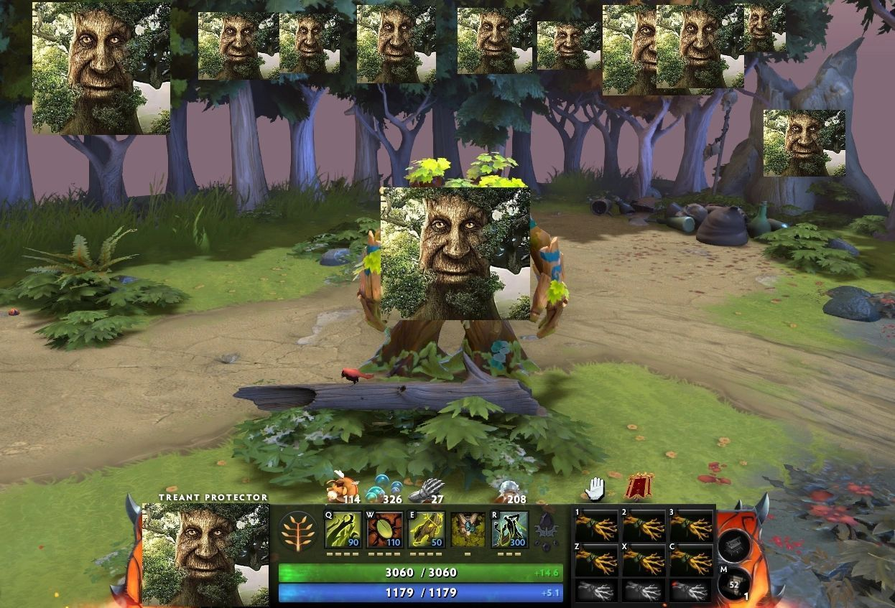

Treant Protector

Скиллы
-
Скилл 1: Leech Seed - Описание: Наносит урон врагу и восстанавливает
здоровье союзникам.
-
Скилл 2: Living Armor - Описание: Обеспечивает защиту и регенерацию
здоровья для союзников и зданий.
-
Скилл 3: Nature's Guise - Описание: Делает Treant невидимым и
увеличивает скорость передвижения.
-
Ультимейт: Overgrowth - Описание: Оглушает врагов в области и наносит
урон.
Как играть
Стратегия игры за Treant Protector: Используйте Leech Seed для контроля
врагов и Living Armor для защиты союзников. Играйте в команде и старайтесь
поддерживать своих товарищей по команде.
Назад к списку персонажей